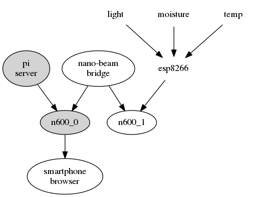
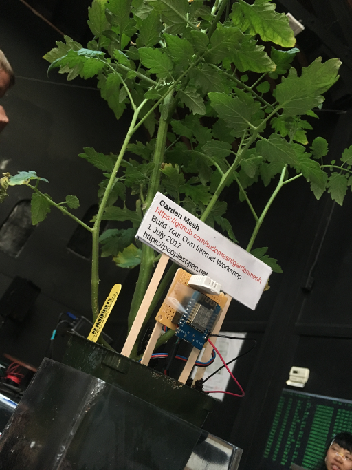

Garden Gnode


Current necessary components:
- ESP8266 flashed with NodeMCU firmware
- Variety of enviromental sensors (currently DHT temperature/humidity sensor and capacitive soil moisture sensor)
- Lua script to collect data from sensors and transmit it to MQTT broker
- BabelD routing on OpenWrt routers
- RaspberryPi to act as MQTT broker and HTTP server for hosting webpage with data
This project is currently based on the NodeMCU firmware.
Components
These are the components that we currently use to gardenmesh:
- Microcontroller & Wifi
- ESP2866
- More info on amazon.com
- Humidity & Temperature Sensor
- RHT03 (also known by DHT-22)
- Technical details:
- Power: 3-5V
- Max Current: 2.5mA
- Humidity: 0-100%, 2-5% accuracy
- Temperature: -40 to 80°C, ±0.5°C accuracy
- More info on sparkfun.com
- Capacitive Soil Moisture sensor
- Technical Details:
- Operating Voltage: 3.3-5.5 VDC
- Output Voltage: 0 ~ 3.0 VDC
- More info on dfrobot.com
- Solar Panel
- Depends on power requirements, 5v 160mA?
- More info on amazon.com
- Battery
- LiPO 18650
- Battery charging circuit
- tp4056 charge module?
More info
Find more information in the gardenmesh git repository.